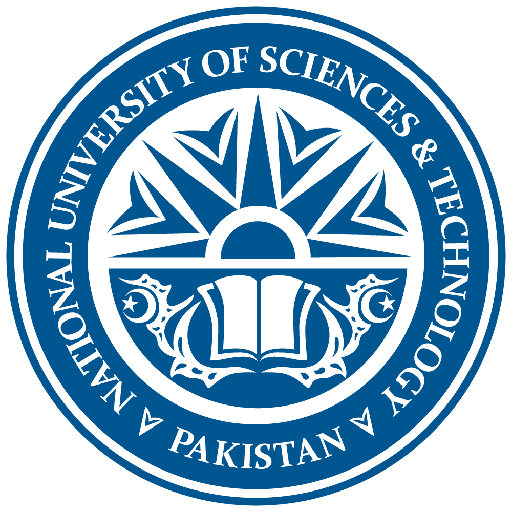

| Home | FAST | UET | PU | UOG |
| The National University of Sciences and Technology (NUST) is a leading public research university in Pakistan, headquartered in Islamabad. Established to advance science, engineering, and technology education, it is recognized for its rigorous academic programs, innovative research, and global collaborations. NUST consistently ranks among South Asia’s top universities for STEM and multidisciplinary studies. | |
NUST was founded to consolidate Pakistan’s military and engineering colleges under one academic framework. Initially linked to defense education, it evolved into a comprehensive institution offering civilian programs in science, business, and social sciences. Over time, it has expanded across multiple campuses nationwide, with the Islamabad campus serving as its academic and administrative hub.
The university comprises numerous schools and institutes covering engineering, IT, natural sciences, business, architecture, and social sciences. Prominent schools include the School of Electrical Engineering and Computer Science (SEECS), the School of Mechanical and Manufacturing Engineering (SMME), and the NUST Business School (NBS). Programs emphasize interdisciplinary learning and industry-relevant research.
NUST prioritizes applied research through innovation centers, technology incubators, and collaborations with industry and international universities. Its Research and Innovation Office supports projects in areas like renewable energy, artificial intelligence, biotechnology, and national development. The university frequently secures patents and international grants.